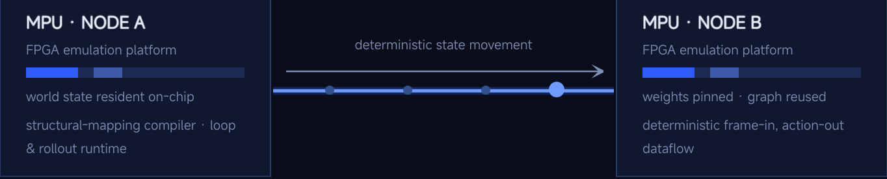

Singapore concept launch · 5–7 November 2026
Visit the Symatics exhibit at AI for Good Summit.
The state-resident architecture at system scale — MPU → SIF → fiber → MPU — with fiber-spool and fault-button controls. Closed-door briefing at NTU on 8 November, by invitation only.
Event details
The state path across one optical link
02
WHEN STATE BECOMES ARCHITECTURE
State as Structure
State defines context, continuity, and behavior.
Persistent by Design
State remains part of computation, not a separate resource.
Localized Execution
Computation stays closer to where state already exists.
Singapore · 5–7 November 2026
First public showing of the MPU architecture.
Symatics unveils its state-resident architecture at the AI for Good Summit, hosted by Alliance for Good at Shangri-La Singapore. The exhibit presents one state domain at rack scale: state leaves a compute node, crosses a fixed-latency optical link, and arrives on time, every cycle.
Where we are, October 2026
DoneGen1 architecture defined. Design partners engaged in Taiwan and Canada. Taipei engineering office open.
NowArchitecture specification and cycle-level model with design partners. Architecture simulation & validation POC completing end of October 2026.
NextFPGA proof-of-concept build completing end of November 2026. Results will be published here as they are measured.